1. Editor
2. Simulator
3. Evaluation Tools
4. An Example Session
5. Algorithms
 a. Driving policies
a. Driving policies
 b. Traffic light controllers
b. Traffic light controllers
 1) Random
1) Random
 2) Most Cars
2) Most Cars
 3) RLD
3) RLD
 4) Hillclimbing
4) Hillclimbing
 5) Longest Queue
5) Longest Queue
 6) Relative LQ
6) Relative LQ
 7) Best first
7) Best first
 8) TC-1
8) TC-1
 9) TC-2
9) TC-2
 10) TC-3
10) TC-3
 11) TC-1++
11) TC-1++
 12) TC-2++
12) TC-2++
 13) TC-3++
13) TC-3++
 14) ACGJ-1
14) ACGJ-1
 15) ACGJ-2
15) ACGJ-2
 16) ACGJ-3
16) ACGJ-3
 17) GenNeural
17) GenNeural
ACGJ-3
This algorithm will receive a Roaduser-waiting-factor per traffic light, as well as a Alternation-factor per TrafficLight. These are calculated from the genes the ACGJ3Individual has. The waiting-factor is allowed to be between 0 and 4, the alternation-factor between 0 and 2.
Per Trafficlight the algorithm keeps track of the build-up Gain as calculated in previous iterations. The new gain in this so-called 'bucket' is calculated in this way:
B(tl) : the gain-bucket for TrafficLight 'tl'
W(tl) : the number of Roadusers waiting at the lane of TrafficLight
'tl'
R(tl) : the weight-per-Roaduser as given by the genes of TrafficLight
'tl'
A(tl) : the alternation-factor as given by the genes of TrafficLight
'tl'
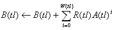
Without leaking some from the bucket, this would lead to infite gains for each trafficlight. To make sure this never happens, whenever a Roaduser passes a TrafficLight, the Bucket is emptied some. The following formula shows how:
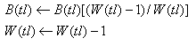
Whenever a Roaduser is allowed to travel by it's TrafficLight, but can't
change to it's desired Drivelane as it's full then action is taken to
make it more likely that that particular lane will move and make space.
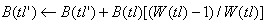
Currently an individual represents a whole city, all the trafficlights
with their independent Weights and Factors. This means that convergion
of the performance of this algorithm will go erratic and slowly. However,
during this period many promising individuals will be created. The user
is encouraged to create his own variants of this algorithm using different
genetic-functions for evolving.
| (Map: Simple) Average Junction Waiting Time | 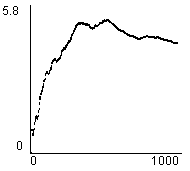 |
| (Map: Simple) Total Road Users Arrived | 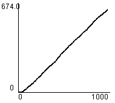 |
| (Map: Simple) Average Trip Waiting Time | 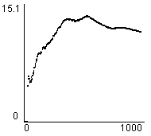 |
| (Map: Simple) Total Waiting Queue Length | 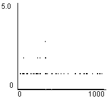 |
| (Map: Complex) Average Junction Waiting Time | 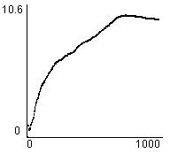 |
| (Map: Complex) Total Road Users Arrived | 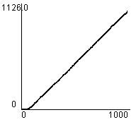 |
| (Map: Complex) Average Trip Waiting Time | 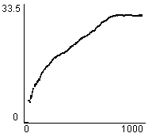 |
| (Map: Complex) Total Waiting Queue Length | 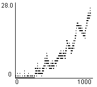 |